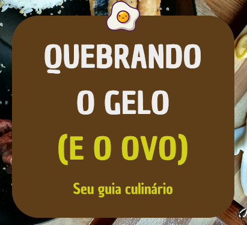

👋 Olá, sou Emerson Danillo!
Frontend Developer
Frontend afiado, Python e Javascript versáteis e Java confiável — crio interfaces que encantam e sistemas que performam. Vamos construir algo que ninguém vai esquecer.
Confira meus Projetos Veja meu Currículo!Sobre
Sou Emerson Danillo, desenvolvedor front-end apaixonado por transformar ideias em interfaces funcionais e intuitivas. Trabalho com HTML, CSS, JavaScript e Python, sempre buscando unir desempenho, acessibilidade e design moderno. Valorizo código limpo, organizado e fácil de manter. Gosto de resolver problemas de forma prática e acredito que um bom produto é aquele que realmente facilita a vida do usuário.


Projetos
Alguns dos meus projetos mais recentes:

Você diz o que tem na geladeira, e o site te mostra receitas fáceis, criativas e deliciosas.
Serviços
Desenvolvimento de Interfaces: Criação de sites e aplicações web responsivas, com foco em design moderno, usabilidade e acessibilidade.
Otimização de Performance: Aceleração no carregamento, SEO técnico e boas práticas de acessibilidade para maior eficiência e visibilidade.
Contato
Se você gostou do meu trabalho e tem um projeto em mente, podemos conversar. Estou disponível para novos desafios, seja em freelance, colaboração ou oportunidades profissionais.